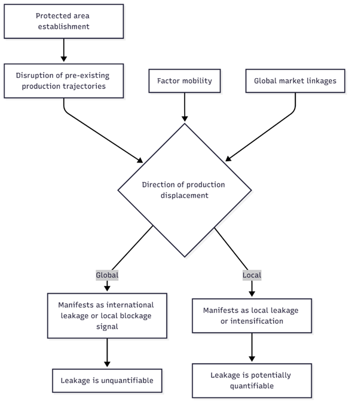

Week 3 Progress Report
Revised Reports
Previous Meeting Recap:
Agreement to revise the structure of the PPP reports.
A bullet-point draft of the feasibility report.
Causal pathways for the local leakage chapter were established, with initial considerations on the data and methods required to test them.
Progress
Following our discussion, I have refined the structure for the first chapter on local leakage. The approach builds upon the work of Ford et al. (2020) and Fuller et al. (2020) but introduces a crucial difference in research design. Moving beyond solely a comparison of rates inside and outside a Protected Area (PA), I am designing a deductive approach. This constructs causal pathways between the context of the PA and its potential local impacts on other habitats within the landscape. These lead to testable hypotheses which can be examined using comparative methods between landscapes with different features.
To this end, I have developed a foundational pathway that links variables - such as the factor mobility of economic activities and the landscape’s connectedness to other markets - to the propensity for production displacement either within or outside of the landscape.

This mix of variables creates a variety of causal pathways. Building on our last discussion, I have outlined several of these:
| Context / Dominant Land Use | Key Driver / Pressure | Mechanism / Spatial Effect | Outcome / Signal |
| Area dominated by subsistence farming (Low factor mobility) | Population pressure mandates expansion of local food production. | Areas in proximity to the PA experience more complete land clearance (fewer untouched habitat patches). | Strong local leakage signal. |
| Area dominated by mobile commodity/plantation agriculture (e.g., palm oil, soy) | Market pressures encourage expansion in many locations, but PA stifles local investment. | Production pressure is displaced to other landscapes. | Lower local leakage signal; landscape exhibits potential “blockage” traits. |
| PA with spatially heterogeneous additionality (some areas more protected than others) in a region of low factor mobility. | Underlying pressure for land conversion remains. | Areas in proximity to sites of high additionality within the PA experience more complete land clearance. | Spatially specific local leakage signal. |
| Area dominated by landscape-specific commodities (e.g., coffee, vanilla) (Low factor mobility due to product specificity) | Global Market pressures encourage expansion of local production. | Due to product specificity, pressure cannot be easily absorbed by other landscapes. Areas near the PA experience more complete land clearance. | Strong local leakage signal. |
To test these hypothesised pathways, data on the local economies of landscapes with PAs is needed. I plan to use models like TESSERA to estimate land use proportions near projects. I have begun experimenting with downloading the embeddings and will develop a streamlined pipeline for producing land use classification maps.

Additionally, I have developed a more computationally efficient version of the find_potential_matches script used in PACT. The original was too intensive for the large-scale pixel matching required for this chapter, especially on a shared resource like Sherwood. A flowchart outlining the new approach can be seen here.
{kind=link}
Finally, the main draft of my feasibility report is largely complete and can be accessed here. I would appreciate any feedback you may have on its content and structure.
Problems
TESSERA Embeddings: Downloading the embeddings is proving challenging. My first attempt caused Sherwood to crash. A subsequent attempt was successful, but downloading for multiple landscapes will be storage-intensive. My proposed solution is to build a pipeline that does the following:
To this end, I will need to determine which classification approach is most effective in terms of accuracy and compute. At the moment a lot of TESSERA demonstrations use an adapted Random Forest method.
- Project Matching Input Data: To begin matching projects with their spillover buffers this month, I need to compile a complete set of project geojsons and associated metadata.
- Landscape Profile Data: I need to finalise the datasets for building landscape profiles for each project. I have initial ideas (e.g., night-time lights, gridded population, biomass, road maps, access layers) but should begin acquiring these resources.
- Feasibility Report: I am worried that my feasibility report is not quite striking the balance between being succinct and covering enough of what I intend to do. For now, I’ve included a qualitative political ecology chapter on the ethics of proactive leakage management the sort I’m advocating for. However, I would be eager to hear your opinions on this idea.
Plans
- Feasibility Report: Finalise the feasibility report promptly to free up focus for the pixel matching work.
- Project Database: Compile a folder and table of project geojsons and metadata. I will primarily focus on REDD+ projects due to their greater policy equivalence, which facilitates cross-regional comparison.
- Data Acquisition: Begin systematically downloading the core datasets required for building the landscape profiles. For now hold off on TESSERA embeddings as they could be a time sink/a distraction whilst there is still low hanging fruit.
- Start writing up a short review table of all the existing local leakage studies, their findings, regions, and methods. Clearly be able to describe what makes my study useful and unique.
Download This Report
Second progress report